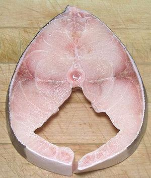

This excellent eating fish is native to the tropical and subtropical waters of the world, except the mid Pacific and east Pacific. In August 2015, thousands of young fish escaped from a cage on the Pacific coast of Ecuador. Within 6 months they were found along the coasts of Colombia and Panama. They are voracious predators, so are expected to significantly alter the ecology and fisheries along the Pacific coast as far north as Southern California. They are particularly fond of crabs, but also eat squid and fish.
This fish can grow to about 78 inches and weigh 172 pounds, but is usually around 43 inches long. The photo specimen was 24 inches long and weighed 4 pounds 1-3/4 ounces. It is the only species in the only genus of family Rachycentridae. There is no Cobia fishery, as it is solitary, just an incidental catch in other fisheries. It is, however, of great interest for aquaculture. Production is under way in China, Taiwan, Vietnam and Panama (2016), and being development in several other countries. IUCN Red List status NE (Not Evaluated).
More on Varieties of Fish
(very large page).
 Cobia is a highly desirable eating fish with good flavor and texture. Raw, its firm flesh is highly favored for sushi, and it can be cooked by just about any method, including grilling on skewers.
The flesh is moist with a flavor that's mild-medium and interesting. The dark region along the centerline has a slightly darker flavor and it's texture is noticeably gelatinous. Cooked, the flesh is still fairly firm, suitable for fish soups and stews. It tends to break up randomly as much as into distinct flakes. The belly flesh of larger fish is a bit fatty, so desirable for grilling and similar applications.
Buying: This fish is becoming more available due to intensive farming development. It is a rather large fish, so you are most likely to encounter it cut into pieces, like the steak in the photo to the left. This steak was 5 inches across, 1 inch thick and weighed 14-1/8 ounces. It was purchased from a Philippine market in Los Angeles (Eagle Rock) for 2016 US $9.99 / pound. They also had Cobia Collars (the bony girdle behind the the gill openings, including the pectoral fins) at $10.75 / pound, so there must be demand for it, as there is for Yellowtail Collar. The 4 pound whole fish specimen at the top of the page was purchased from the same market at 2016 US $4.99 / pound, an introductory price, as it's now about 2019 US $6.99 / pound at the same store.
IF you are unfamiliar with preparing whole fish, see our page Cleaning & Filleting Round Fish .
Scales: This fish is mostly covered with tiny scales shaped like narrow elongated ovals. The white belly has no scales. The scales take some energy to scrape off, and they fly around a lot, but don't go far. The main problem is that they don't all scrape off, so I scale in two steps. First I scrape with the back of my prep knife, as for most fish, then I use the sharp edge to shave the fish, removing scales that tipped up and didn't come off. You can test for scales by petting the rinsed fish backwards, but watch out for the sharp spines in front of the dorsal fin.
Cleaning: Nothing unusual here, except some parts are a bit tough due to the size of the fish. You'll need kitchen shears to sever the esophagus and to cut out the large gills. Be sure to break through the membrane covering the backbone so you can clean out the blood works there.
Fillet: This fish is reasonably easy to fillet, as it has a coherent fin and bone structure. Cut from top down and front to back, then over the backbone at the tail and work forward. When you get to the rib cage, just cut the ribs from the backbone with kitchen shears. They pull easily from the fillet. This leaves the membrane lining the body cavity intact, but don't worry, it has almost no shrink and no noticeable taste. Pulling the centerline pin bones is more difficult - they are more needle size than pin size. They are in hard, and tend to break. Commercially, the centerline is just cut from the upper and lower fillets. This is a large fish, so it is usually parted out into 8 or more fillets. The fatty belly of large fish is often sold separately for grilling, roasting or smoking.
Skin: The skin has little shrink and does not have a strong or "off" flavor. It is thick and quickly becomes gelatinous. For hot dry cooking, like grilling, frying or broiling, the skin is best left on. For wet cooking, you must be sure the skin has been thoroughly descaled or it will have bad mouth feel. If so, it can be easily peeled off after cooking. Because it is thick and strong, the skin is easily removed from raw fillets by the usual long knife and cutting board Method. Skinning is easier if you cut the fillets in half along the centerline so they are not so wide.
Yield: A 4 pound 1-3/4 ounce fish yielded 2 pounds 3/4 ounce skin-on (50%). Skin-off yield was 1 pound 13 ounces (44%). This drop is significant because the skin is thick, but it can go into the stock pot.
Stock: Heads, fins, bones and skins make a serviceable light-medium fish stock. For details see our recipe Making Fish Stock.
sf_cobiaz 160320 r 161105 - www.clovegarden.com